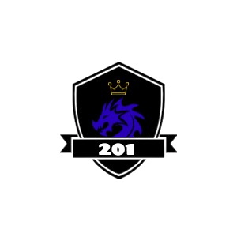

Bem-vindo ao Portfólio da Turma
Exibindo nossos trabalhos e projetos realizados ao longo do curso.
Explore Nossos ProjetosExibindo nossos trabalhos e projetos realizados ao longo do curso.
Explore Nossos ProjetosSomos uma turma dedicada ao aprendizado contínuo e à aplicação prática dos conhecimentos adquiridos em sala de aula. Aqui você encontrará uma seleção de nossos melhores projetos, onde aplicamos criatividade, inovação e técnicas modernas de desenvolvimento.
Descrição do projeto 1. Detalhes sobre a ideia, desenvolvimento e resultados obtidos.
Saiba MaisDescrição do projeto 2. Abordagens inovadoras e tecnologias utilizadas no desenvolvimento.
Saiba MaisDescrição do projeto 3. Como o projeto impactou e as lições aprendidas durante o processo.
Saiba Mais